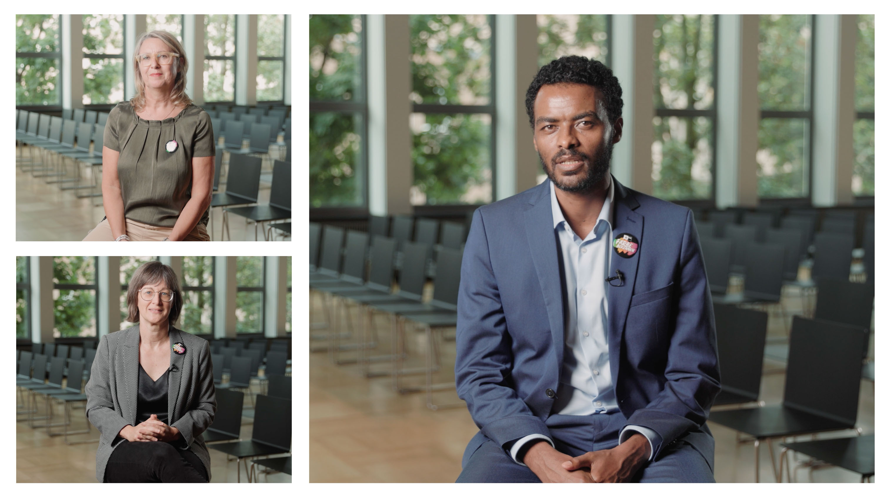
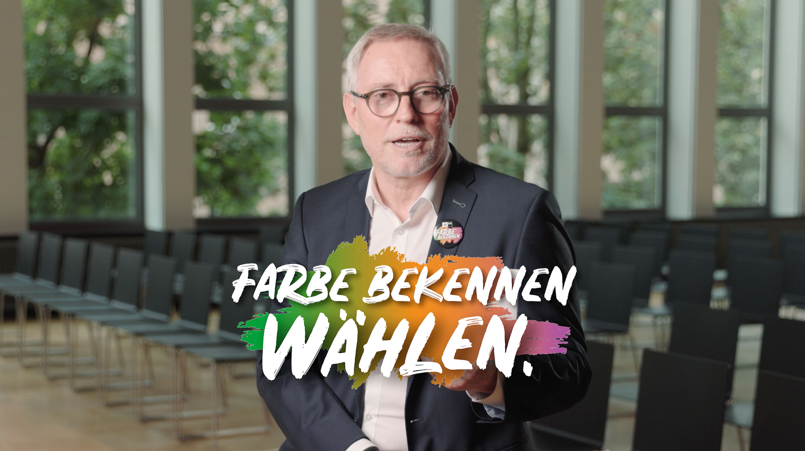

IHK Nürnberg
IHK Wahlspot

Für die IHK Nürnberg für Mittelfranken entstand in Zusammenarbeit mit Elmografico eine Wahlkampagne, die den Fokus auf persönliche Nähe und klare Botschaften legte. In einem interaktiven Videoask-Format stellten sich die Kandidatinnen und Kandidaten mit ihren Projekten vor – kurz, direkt und auf Augenhöhe. Die Clips wurden zusätzlich zum Videoask auch auf Social Media ausgespielt.
Ein zusätzlicher zentraler Bestandteil war ein TV-Spot, den ich aus dem Material für das Frankenfernsehen entwickelte. Der Schnitt setzt auf Dynamik und Tempo, bleibt dabei aber klar und zugänglich. Ziel war ein Format, das sich von klassischen Wahlspots abhebt – frisch im Rhythmus, präzise in der Aussage und visuell nah an der Kampagne..
BTS / Standbilder

